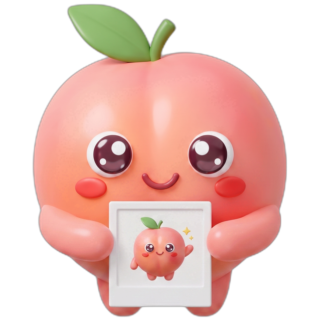

Copy any imageก๊อปรูปอะไรก็ได้
Win+Shift+S, Snipping Tool, Lightshot, ShareX, or Copy image in a browser.Win+Shift+S, Snipping Tool, Lightshot, ShareX หรือ Copy image ในเบราว์เซอร์
On Windows, Ctrl+V can't drop a screenshot into Claude Code. clipwarp fixes that — copy an image anywhere and paste it straight in. บน Windows กด Ctrl+V วางรูปลง Claude Code ไม่ได้ clipwarp แก้ให้ — ก๊อปรูปจากที่ไหนก็ได้แล้ววางเข้าไปตรง ๆ

Paste this into PowerShell — that's the whole setup.วางคำสั่งนี้ใน PowerShell — จบแค่นี้
irm https://raw.githubusercontent.com/botnick/clipwarp/main/install.ps1 | iex
See it in actionดูตอนใช้งานจริง
Install, start the watcher, then a screenshot pastes straight into Claude Code as an image.ติดตั้ง เปิด watcher แล้วสกรีนช็อตก็วางลง Claude Code เป็นรูปได้เลย


How it worksทำงานยังไง
clipwarp watches your clipboard. When an image lands, it saves a PNG and puts that file's path on the clipboard as text — which Claude Code attaches automatically.clipwarp คอยดู clipboard พอมีรูปเข้ามา มันจะเซฟเป็น PNG แล้วเอา path ของไฟล์ใส่ clipboard เป็นข้อความ ซึ่ง Claude Code แนบให้เองอัตโนมัติ
Win+Shift+S, Snipping Tool, Lightshot, ShareX, or Copy image in a browser.Win+Shift+S, Snipping Tool, Lightshot, ShareX หรือ Copy image ในเบราว์เซอร์

It saves a PNG and swaps the clipboard to its path, automatically in the background.เซฟ PNG แล้วสลับ clipboard เป็น path ให้อัตโนมัติเบื้องหลัง

Press paste and the screenshot attaches. No extra steps, no fuss.กดวางแล้วรูปแนบเลย ไม่มีขั้นตอนเพิ่ม
Why you'll like itทำไมถึงน่าใช้
Run clipwarp watch once, or autostart at login. Then it's just Ctrl+C then Ctrl+V, forever.รัน clipwarp watch ครั้งเดียว หรือ autostart ตอนล็อกอิน จากนั้นก็แค่ Ctrl+C แล้ว Ctrl+V ตลอด
Plain PowerShell and built-in .NET. Your images never touch the network.เป็น PowerShell กับ .NET ที่มากับ Windows รูปไม่ออกเน็ตเลย
Bitmaps, PNG streams, alpha DIBv5, file copies, browser Copy image. Where naive clipboard reads fail, clipwarp doesn't.bitmap, PNG stream, DIBv5 มี alpha, ก๊อปไฟล์, Copy image จากเบราว์เซอร์ ที่การอ่านแบบง่าย ๆ ล้มเหลว clipwarp ทำได้
No services, no installs. Windows Terminal, PowerShell, cmd, and the VS Code terminal. PS 5.1 and 7.ไม่มี service ไม่ต้องลงอะไรเพิ่ม ใช้ได้ใน Windows Terminal, PowerShell, cmd และเทอร์มินัล VS Code รองรับ PS 5.1 และ 7
Commandsคำสั่ง
clipwarp watchclipwarp autostartclipwarp statusclipwarp stopclipwarp unautostartcwWhile the watcher is on, every image you copy also carries its file path as text. So when you paste:ตอนเปิด watcher อยู่ ทุกครั้งที่ก๊อปรูป จะมี path ของไฟล์ติดไปด้วย เวลาวางจึงเป็นแบบนี้
C:\Users\…\clip-….pngช่องที่รับแค่ข้อความ จะได้ path มาแทน เช่น C:\Users\…\clip-….pngDone with Claude Code? Run clipwarp stop — and clipwarp unautostart so it won't start at login.เลิกใช้ Claude Code เมื่อไหร่ พิมพ์ clipwarp stop และ clipwarp unautostart เพื่อไม่ให้เปิดเองตอนล็อกอิน
FAQ
Alt+V is WSL-only. Pasting a file path as text is the reliable route — clipwarp automates it.ตัว UI เทอร์มินัลของ Claude Code บน Windows แท้ อ่าน bitmap จาก clipboard ไม่ได้ และ Alt+V ใช้ได้แค่บน WSL วิธีที่เวิร์กคือวาง path ของไฟล์เป็นข้อความ — clipwarp ทำให้อัตโนมัติWin+Shift+S, PrtScn, or Lightshot, then press Ctrl+V in Claude Code. Without the watcher, run cw after the screenshot, then Ctrl+V.เปิด watcher ไว้ แล้วจับภาพด้วย Win+Shift+S, PrtScn หรือ Lightshot จากนั้นกด Ctrl+V ใน Claude Code ถ้าไม่เปิด watcher ให้รัน cw หลังจับภาพ แล้วค่อย Ctrl+VAlt+V usually works. clipwarp targets native Windows — Windows Terminal, PowerShell, cmd, VS Code terminal — where nothing else does.บน WSL ปกติ Alt+V ของ Claude Code ใช้ได้อยู่แล้ว clipwarp ทำมาเพื่อ Windows แท้ — Windows Terminal, PowerShell, cmd, เทอร์มินัล VS Code — ที่ไม่มีอะไรใช้ได้Ready in ten secondsพร้อมใช้ใน 10 วินาที
One command, and Ctrl+V just works in Claude Code. Free and open source.คำสั่งเดียว แล้ว Ctrl+V ก็ใช้ได้ใน Claude Code ฟรีและโอเพนซอร์ส
View on GitHubดูบน GitHub